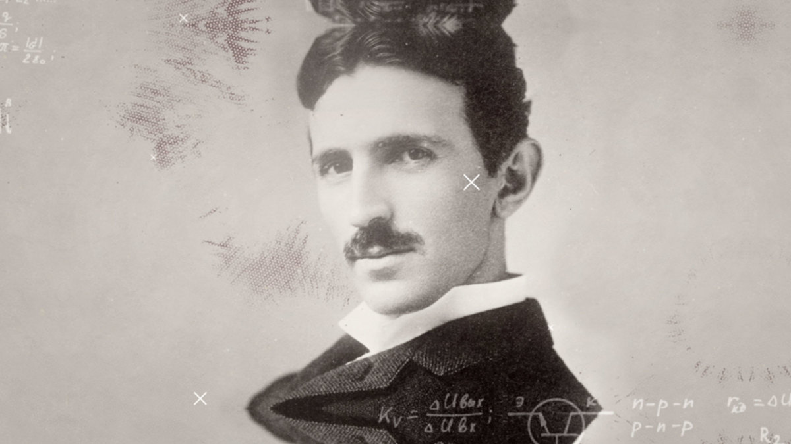

Nikola Tesla
The master of electricity

Here's a timeline of Nikola Tesla's life:
- 1856 - born into a Serb family in the village of Smiljan, Austrian Empire
- 1861 - attended the "Lower" or "Primary" School in Smiljan where he studied German, arithmetic, and religion
- 1870 - moved to Karlovac, to attend school at the Higher Real Gymnasium, where he was profoundly influenced by a math teacher Martin Sekulic
- 1873 - returned to his birthtown, Smiljan. Shortly after he arrived, Tesla contracted cholera; he was bedridden for nine months and was near death multiple times
- 1874 - evaded being drafted into the Austro-Hungarian Army in Smiljan by running away to Tomingaj, near Gracac
- 1875 - enrolled at Austrian Polytechnic in Graz, Austria, on a Military Frontier scholarship
- 1878 - left Graz and severed all relations with his family to hide the fact that he dropped out of school
- 1881 - moved to Budapest to work under Ferenc Puskás at a telegraph company, the Budapest Telephone Exchange
- 1882 - began working for the Continental Edison Company in France, designing and making improvements to electrical equipment
- 1885 - said that he could redesign Edison's inefficient motor and generators, making an improvement in both service and economy
- 1886 - partnered with two businessmen in 1886, Robert Lane and Benjamin Vail, who agreed to finance an electric lighting company in Tesla's name, Tesla Electric Light & Manufacturing
- 1891 - at the age of 35, Tesla became a naturalized citizen of the United States, and established his South Fifth Avenue laboratory
- 1894 - began investigating what he referred to as radiant energy of "invisible" kinds after he had noticed damaged film in his laboratory in previous experiments
- 1900 - granted patents for a "system of transmitting electrical energy" and "an electrical transmitter."
- 1919 - spent the period working in Milwaukee for Allis-Chalmers
- 1943 - at the age of 86, Tesla died alone in room 3327 of the New Yorker Hotel
"Our virtues and our failings are inseparable, like force and matter. When they separate, man is no more."
For more Info -->
Click Here